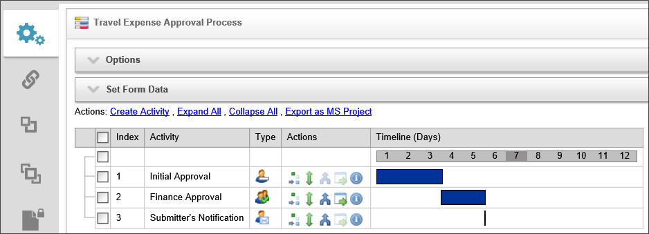
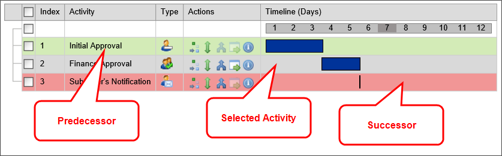

The Process Timeline functionality of Process Director is what sets it apart. Process Director adds the element of time to business process management in a way that nothing else does. Instead of traditional flowchart-based workflows, Process Director's Process Timeline uniquely adds scheduling and predictive capabilities to workflow management.
The Process Timeline may look familiar to you, because it is presented in Gantt chart format. The Gantt chart is a type of chart that places each activity in a process on a single line that is horizontally marked in some increment of time, usually days. Each activity is marked with a bar that whose left end begins at the task's start date, and ends at the task's end date. This type of chart is widely used in project management.
Figure 83: Generic Gantt Chart
Process Director uses this generic Gantt chart format for the Process Timeline, and adds additional functionality for use in modeling and managing business processes. BP Logix developed the Process Timeline to address the need to measure and predict process execution times. Process Timeline enables organizations to build robust, executable process models within Process Director. Business users design Process Timelines by answering two questions as they add each step to the process:
We refer to these, respectively, as the dependence and duration questions. Each activity will begin as soon as its prerequisites, if any, are complete. The result is a solution with many valuable features:
Most activities have a dependence on one or more other activities. Dependence refers to the requirement that an activity cannot begin until a predecessor activity, or activities, ends. This type of relationship (often referred to by project managers as finish-to-start) represents the most fundamental starting condition for any activity.
Below is the Process Timeline for the BP Logix Getting Started Sample Project. It consists of three tasks, or activities. The Timeline column of the Process Timeline shows the number of days planned for each activity. Initial Approval is scheduled to take three workdays, Finance Approval is expected to take two workdays, and the Submitter's Notification will take 0 workdays, as it is an automated process that will be performed by Process Director. The Finance Approval activity is dependent on the Initial Approval. The Submitter's Notification, in turn, is dependent on Finance Approval.

Figure 84: Travel Expense Approval Process Timeline
An activity may also be a parent or child activity. A parent activity is a container for other, subordinate activities, each of which is referred to as a child activity. Child activities have an implied dependence on their parent, so, absent any additional conditions, the child activities begin when the parent activity begins. Once all of the child activities are complete, the parent is complete.

Figure 85: Sample Parent/Child Activities
In Process Director, it is possible for a parent and child activities to have a much more advanced interaction than described here. These interactions are intended to support more specialized and unusual cases, however, so they will be addressed in more advanced lessons.
Each activity in the Process Timeline has an Actions column with four icons, each of which enable you to modify one of the activity's properties.
|
ICON |
ACTION |
|---|---|
|
|
Drag to move under another parent: Drag the activity to a parent activity. The activity you drag will become a child of that parent. |
|
|
Drag to move order: Change where the activity appears in the Process Timeline. Note: changing the location of the activity does not change the behavior of the Process Timeline, which is strictly governed by the rules of dependence and other activity starting conditions. |
|
|
Drag to add a dependence: Drag and drop an activity onto another to make the dragged activity dependent upon the target. |
|
|
Conditions: Click this icon to open the activity's properties on the Needed When tab. |
|
|
Properties: Click this icon to open the activity's properties on the Start When tab. |
The properties for each activity are presented in a tabbed interface. Each tab groups similar properties together.
|
TAB |
DESCRIPTION |
|---|---|
|
Activity |
This tab enables the user to select the Activity Type, such as a User, Custom Task, Form Action, etc. It also contains other general activity settings. |
|
Activity type |
This tab will show specific properties that pertain to the Activity Type you select. The tab's label will change to reflect the selected Activity Type. |
|
Start When |
This tab enables you to inspect and modify the dependencies and conditions that determine when the activity will start. |
|
Completed When |
This tab enables you to inspect and modify the conditions that determine when the activity will complete. Rarely used, as most activities complete organically (such as when a user submits a form, or an automated task completes). |
|
Needed When |
This tab enables you to inspect and modify the conditions that determine if an activity will be run once its start conditions have been met. These conditions will be evaluated once when the activity becomes eligible to start. |
|
Due Date |
This tab enables you to inspect and modify the due date for the activity, and the actions to take when the activity is not completed by the due date. |
|
Notifications |
This tab enables you to configure who is notified about the activity and when notifications should be sent. |
|
Advanced Options |
This tab enables you to configure advanced properties, such as how the activity is assigned to user, what steps to take when a user completes the activity, etc. |
The sample project Process Timeline is relatively simple, and consists of only three steps—one of which is conditional. The first step is for the initial approval of the travel request that the Form encapsulates. The second step is the approval of the Finance group, if the amount is over $1,000. The final step notifies the requestor whether the travel request has been approved. It’s worthwhile to note that the initial action—the employee filling out the form and submitting it for approval—isn’t represented as an activity within the Process Timeline. Rather, submitting the form is the action that triggers the Process Timeline to begin. So although we would normally think of that form submission as being part of the workflow, the Process Timeline itself begins at the point at which the form has already been completed and submitted.
To recreate this process, navigate to the BP Logix Getting Started Sample Project folder, and select “Process Timeline Definition” from the Create New… dropdown in the upper right portion of the screen to open the Create Process Timeline Definition screen. In this screen, type “My Request Approvals” in the Process Timeline Name textbox, then fill out a brief description in the Description textbox. Click the OK button to open the configuration screen for the new Process Timeline.
The configuration screen will display a blank Process Timeline. Let’s start by configuring Process Director to set the "My Travel Expense Request" Form as the default Form for this Process Timeline. Just as was the case when we were configuring the business rule, specifying the Form to associate with this Process Timeline will make it easier for us to select Form fields as we’re configuring the Process Timeline. Above the Process Timeline diagram is a hidden Options section that has a gray background. Open this section by clicking the “+” box next to the text that says “Options”. The options section of the screen will open.
In the Options section, there is a picker control labeled “Form for Process Timeline (will attach Form instance if needed)”. Click the Build button for this picker control to open the dialog box that enables you to choose the Form. From this dialog box, select the Form definition you just created. The dialog box will close, and the name of the Form will appear in the picker control. Click “Update” to save this change.

Figure 90: Process Timeline Options
We’re ready to configure the Process Timeline. Add the first step to the Process Timeline by clicking the link labeled “Create Activity" to add a blank activity named “Activity 1” to the Process Timeline. Double-click on the “Activity 1” text, and the configuration dialog box for the activity will open.
In the Name textbox, rename the activity “Initial Approval”. On the Activity tab, select “User” from the Activity Type dropdown. Selecting a User activity tells Process Director that this activity will be assigned to a user for completion. Let’s give the user a reasonable amount of time to approve the request by setting the Duration of Activity to 3 business days.

Figure 91: Initial Approval Activity Tab
In the Participants tab, Process Director has by default assigned this activity to the Process Timeline Initiator, which is the person who initially fills out the form. Instead, we want to assign the activity to the initial approver we selected on the Form.
From the dropdown labeled, "Timeline Initiator", select “From Form Field”. This selection will add two new picker controls to the row. Click the unlabeled picker control that is placed immediately to the right of the dropdown control to open the Choose Form Field dialog box. We want to assign this task to the Initial Approver the user selected in the Form, so, from the Form Field dropdown control, select “Approver” See how easy that was? That’s because the Process Timeline already knew which Form definition we are using, so it was able to offer us a list of just the fields on that Form. Click the OK button to close the dialog box. Then click the Update button, continuing to practice the good habit of saving our work as we go.

Figure 92: Initial Approval Participants Tab
Next, we must set the possible results for this activity. Each result we configure will appear as a button on the form when the user (in this case, the approver specified in the Approver field) is viewing the form while engaged in this activity. In the Results tab, click on the Add Result button. A blank result header will appear below the button, labeled "Activity Result". Click on the Activity Result header to open the result details section. In the Result Name text box, type "Approved" to rename the result to Approved when the Process Timeline is saved. Repeat these steps to add another result, and name the second result "Denied".

Figure 93: Initial Approval Results Tab
Click the Process Timeline's Update button to save your changes and close the properties dialog box for the Initial Approval activity.
Once the Initial Approval activity is complete, the form will be routed to the Finance group, but only if the amount exceeds $1,000. Click the “Create Activity” link to add a new activity to the Process Timeline. Double-click the activity name to open the configuration screen for the activity.
Once again, this will be a user activity. Rename the activity “Finance Approval”. In the Activity tab, set the Activity Type to “User”, and set the Duration of Activity to 2 business days.

Figure 94: Finance Approval Activity Tab
Recall that the Initial Approval activity was assigned to the specific user identified in the Approver form field. The Finance Approval activity, however, will be assigned to the whole Finance group. When the activity begins, every user in that group will receive a notification, and any one of them may actually complete the task. Sometimes this type of task assignment is called a “group work queue”. As an aside, groups can be taken from your organization’s user directory (such as Active Directory or LDAP), or configured directly within Process Director.
In the Participants tab, remove the “Process Timeline Initiator” participant, then click the Add Participant button. From the Choose Participant Type dropdown, select “Groups” to add a picker control to the row. Click the picker’s Build button to open the Group Chooser dialog box. In the Group Chooser dialog box, select the Finance group, then click the OK button to close the dialog box.

Figure 95: Finance Approval Participants Tab
Just as we did for the Initial Approval activity, we need to set the possible results for the Finance Approval activity, as well. In the Results tab, click on the Add Result button. A blank result header will appear below the button, labeled "Activity Result". Click on the Activity Result header to open the result details section. In the Result Name text box, type "Approved" to rename the result to Approved when the Process Timeline is saved. Repeat these steps to add another result, and name the second result "Denied".

Figure 96: Finance Approval Results Tab
In the Completed When tab, set the dropdown labeled “All Users Have Completed Activity” to “First user Completes Activity”. We are going to assign this task to a group, and as soon as one member of the group approves or rejects the request, we want to end the task for everyone.

Figure 97: Finance Approval Completed When Tab
To make this activity fully functional, we will need a business rule to run to determine whether or this activity is actually needed. We already know that we don't want this activity to run unless the total request amount is greater than $1,000. We will need to implement this rule-based decision on the Needed When tab. We have not, however, created that Business Rule that implements this logic yet, so for now we will continue creating the Process Timeline, and return to the Needed When tab of the Finance Approval activity after the Business Rule is created.
In the Advanced Options tab, check the checkbox labeled “Assign task to first user to accept”. We are assigning this task to the whole Finance group, not to a specific individual. We don't, however, want everyone in the Finance group to perform the task. Once a member of the Finance group accepts the task, we want the task assigned only to the person who accepts it.

Figure 98: Finance Approval Advanced Options Tab
Click the Close button.
Since we want this activity to start after the Initial Approval activity is complete, we need to configure a dependence on the Finance Approval activity.

Figure 99: Dragging an Activity to Set Dependency
Click and hold the wishbone-shaped Add Depends On icon, and drag the Finance Approval activity onto the Initial Approval activity. Now, the Finance Approval activity depends on the Initial Approval activity, meaning that the former won’t start until the latter is complete. You can verify that this dependence has been created properly by clicking on the blue bar associated with the Finance Approval activity. You’ll see the Finance Approval activity highlighted, illustrating the dependence relationship.

Figure 100: Finance Approval Activity Dependency
Another way to verify that the dependence was successfully created is to visit the Start When tab in the properties for the Finance Approval activity. The dependence on the Finance Approval activity is indicated there.

Figure 101: Finance Approval Start When Tab
Click Close, and then click the Process Timeline's Update button to save your changes and close the properties dialog box.
Click the Create Activity link again to add another activity. Double-click on the new activity’s name to open its configuration screen. In the configuration screen, change the Name property to “Submitter's Notification”. Then, in the Activity tab, change the Activity Type to “Notify”.

Figure 102: Submitter's Notification Activity Tab
Now, click on the Notifications tab. We want to set this activity to notify the Timeline initiator when the process is complete. Click the Add Notification button to add a person for the activity to notify. Clicking this button causes a new set of controls to appear, enabling you to configure the notification. From the dropdown labeled "Choose Notify Type", select "Timeline Initiator".

Figure 103: Submitter's Notification Notifications Tab
Click the Close button to close the configuration screen. Look at the Process Timeline Gantt chart and notice that, as things stand, the Submitter's Notification activity will start at the beginning of the process, in parallel with the Initial Approval activity.

Figure 104: Process Timeline Before Adding Notification Dependency
Of course, we want the Submitter's Notification activity to run only after the other approvals have completed, so we’ll make it dependent on the Finance Approval activity. Use the same technique we used earlier: click and hold the wishbone-shaped Add Depends On icon for the Submitter's Notification activity, and drag and drop it onto the Finance Approval activity. Note how the Gantt chart now reflects the correct ordering of the activities.

Figure 105: Process Timeline After Adding Notification Dependency
To further understand how dependence works, click the blue bar on the Finance Approval activity as you did earlier. Now note that there are two highlighted activities: the Initial Approval activity is highlighted in green, indicating that it is a predecessor to the Finance Approval activity (that is, the Finance Approval activity depends on the Initial Approval activity). The Submitter's Notification activity is highlighted in red, indicating that it is a successor to the Finance Approval activity (the Submitter's Notification activity depends on the Finance Approval activity).

Figure 106: Timeline Dependencies
Click the OK button above the Process Timeline chart to save all the changes you’ve made to the Process Timeline, and return you to the list of objects for the My Project folder.